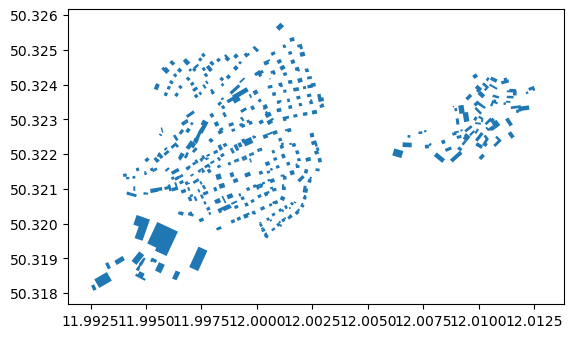
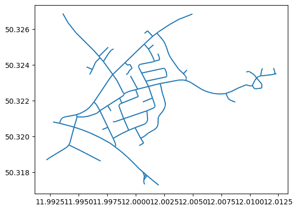
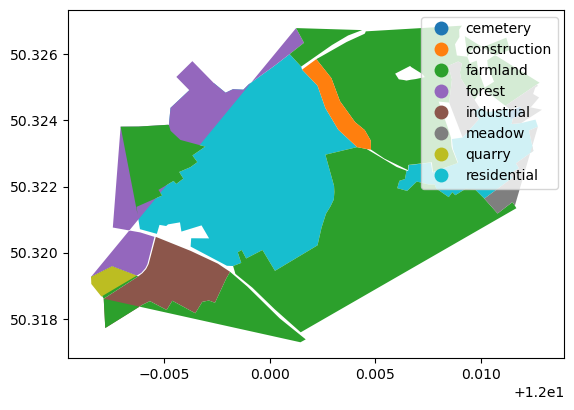
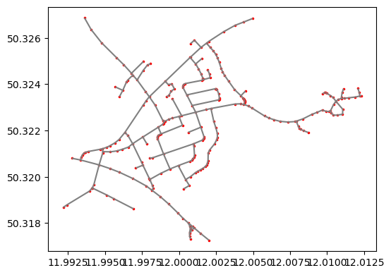
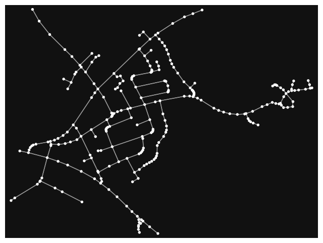

OSM PBF to SIR 3S SHP Import
This example demonstrates how to convert OSM data into shape files for import into SIR 3S. The OSM data does not have to be obtained separately, but is created by the script.
For this to work, however, you must download ‘osmconvert.exe’ from the OSM Wiki (https://wiki.openstreetmap.org/wiki/Osmconvert#Download).
[1]:
osmconvert_path = r"C:\3S\Sir3s\osmconvert64-0.8.8p.exe"
PT3S Release
[2]:
#pip install -q PT3S -U --no-deps
Necessary packages for this Example
When running this example for the first time on your machine, please execute the cell below. Afterward, you may need to restart the kernel (using the ‘fast-forward’ button).[3]:
pip install -q osmnx Pillow
Note: you may need to restart the kernel to use updated packages.
[ ]:
pip install -q pyrosm
Input Data
Enter your coordinates here
[3]:
bbox = (50.32709, 11.99152, 50.31720, 12.01289) # (north, west, south, east)
crs = 'EPSG:25832' # 'EPSG:4326' is the coordinate system in which the OSM file is created, you may want to change it
filename = 'Example_region' # Name under which the file is saved
Imports
[4]:
import logging
import sys
import re
import os
import importlib
import warnings
import math
import pandas as pd
import geopandas
import folium
import pyrosm
from pyrosm.data import sources
from shapely import geometry, ops
import matplotlib
import matplotlib.pyplot as plt
from matplotlib import cm
from matplotlib.colors import ListedColormap
import matplotlib.font_manager as font_manager
import contextily as cx
import numpy as np
import shapely
import osmnx as ox
import sys
import os
import glob
import re
from xml.etree.ElementTree import ElementTree
from xml.etree.ElementTree import Element
from xml.etree.ElementTree import SubElement
import xml.etree.ElementTree as ET
from PIL import Image
Logging
[5]:
logger = logging.getLogger()
logFileName= r"Example4.log"
loglevel = logging.DEBUG
logging.basicConfig(filename=logFileName
,filemode='w'
,level=loglevel
,format="%(asctime)s ; %(name)-60s ; %(levelname)-7s ; %(message)s")
fileHandler = logging.FileHandler(logFileName)
logger.addHandler(fileHandler)
consoleHandler = logging.StreamHandler()
consoleHandler.setFormatter(logging.Formatter("%(levelname)-7s ; %(message)s"))
consoleHandler.setLevel(logging.INFO)
logger.addHandler(consoleHandler)
Fetching OSM Data
[6]:
import requests
def fetch_osm_data(bbox, output_osm):
"""
Retrieves OSM data for the specified area and saves it in an .osm file.
:param bbox: A tuple with the coordinates (north, west, south, east)
:param output_osm: Path to the output file
"""
north, west, south, east = bbox
# Check the coordinates for validity
if not (north >= south and west <= east):
raise ValueError("The bounding box coordinates are invalid. Make sure that north >= south and west <= east.")
# Define the Overpass API URL
overpass_url = "http://overpass-api.de/api/interpreter"
# Build the URL for the request
query = f"""
[out:xml];
(
node({south},{west},{north},{east});
way({south},{west},{north},{east});
relation({south},{west},{north},{east});
);
out body;
"""
# Execute the request
try:
response = requests.post(overpass_url, data={'data': query})
response.raise_for_status() # If HTTP errors occur, an exception is thrown
# Write the data to an .osm file
with open(output_osm, 'wb') as f:
f.write(response.content)
print(f'Data successfully retrieved and saved in {output_osm}.')
except requests.RequestException as e:
print(f'Error in the request: {e}')
osm_file = filename + '.osm' # Output file for .osm
fetch_osm_data(bbox, osm_file)
Data successfully retrieved and saved in Example_region.osm.
[7]:
import subprocess
def convert_osm_to_pbf(input_osm, output_pbf):
"""
Converts an OSM file into a PBF file with osmconvert.exe.
:param input_osm: Path to the input OSM file
:param output_pbf: Path to the output PBF file
"""
# Command to convert
command = f'"{osmconvert_path}" {input_osm} -o={output_pbf}'
try:
# Execute the command
subprocess.run(command, shell=True, check=True)
print(f'Datei erfolgreich konvertiert: {output_pbf}')
except subprocess.CalledProcessError as e:
print(f'Fehler bei der Konvertierung: {e}')
pbf_file = filename + '.pbf'
convert_osm_to_pbf(osm_file, pbf_file)
Datei erfolgreich konvertiert: Example_region.pbf
[8]:
osm = pyrosm.OSM(pbf_file)
View .pbf file
[9]:
buildings = osm.get_buildings()
buildings.plot()
[9]:
<Axes: >

[10]:
drive_net = osm.get_network(network_type="driving")
drive_net.plot()
[10]:
<Axes: >

[11]:
landuse = osm.get_landuse()
landuse.plot(column='landuse', legend=True)
[11]:
<Axes: >

Determine and view topology
[12]:
nodes, edges = osm.get_network(nodes=True, network_type="driving")
[13]:
ax = edges.plot(figsize=(6,6), color="gray")
ax = nodes.plot(ax=ax, color="red", markersize=2.5)

[14]:
G = osm.to_graph(nodes, edges, graph_type="networkx")
[15]:
ox.plot_graph(G)

[15]:
(<Figure size 800x800 with 1 Axes>, <Axes: >)
[16]:
ox.folium.plot_graph_folium(G)
C:\Users\wolters\AppData\Local\Temp\ipykernel_39924\950166968.py:1: FutureWarning: The `folium` module has been deprecated and will be removed in the v2.0.0 release. You can generate and explore interactive web maps of graph nodes, edges, and/or routes automatically using GeoPandas.GeoDataFrame.explore instead, for example like: `ox.graph_to_gdfs(G, nodes=False).explore()`. See the OSMnx examples gallery for complete details and demonstrations.
ox.folium.plot_graph_folium(G)
[16]:
Make this Notebook Trusted to load map: File -> Trust Notebook
Exports
Change CRS
[17]:
nodes = nodes.to_crs(crs)
edges = edges.to_crs(crs)
buildings = buildings.to_crs(crs)
Column calculation
[18]:
nodes['NAME']=nodes['id'].astype('string')
nodes['XKOR']=nodes.centroid.x
nodes['YKOR']=nodes.centroid.y
nodes['ZKOR']=0.
nodes['BESCHREIBU']=''
nodes['IDREFERENZ']=nodes['id']
[19]:
if not nodes[nodes.NAME.duplicated()].empty:
logger.error('mehrfache Knotennamen!')
[20]:
if max(nodes.NAME.str.len()) > 10:
logger.error('Laenge von Roh-Knotennamen >10!')
ERROR ; Laenge von Roh-Knotennamen >10!
[21]:
edges['IDREFERENZ']=edges['id']
edges['BESCHREIBU']=edges.apply(lambda row: "OSM: Knoten {!s:s} -> Knoten {!s:s}; Länge: {:10.2f}".format(row['u'],row['v'],row['length']),axis=1)
edges['STRASSE']=edges.apply(lambda row: "{!s:s}".format(row['name']),axis=1)
[22]:
buildings['IDREFERENZ']=buildings['id']
buildings['BESCHREIBU']=buildings.apply(lambda row: "{!s:s};{!s:s};{!s:s};{!s:s};{!s:s};{!s:s}".format( row['addr:city']
,row['addr:postcode']
,row['addr:street']
,row['addr:housenumber']
,row['name']
,row['building']),axis=1)
[23]:
fwvb=buildings.copy(deep=True)
[24]:
fwvb['W0']=fwvb.area
[25]:
fwvb.set_geometry(fwvb.centroid,inplace=True)
Shape
Choose columns and write Shape
[26]:
pbf_file_head,ext=os.path.splitext(pbf_file)
pbf_file_head,ext
[26]:
('Example_region', '.pbf')
[27]:
# Shift RL
xoff=2.
yoff=0.
zoff=0.
[28]:
nodeColsShape=['NAME','IDREFERENZ','geometry']
#nodes['NAME']=nodes['NAME'].apply(lambda x: 'V-'+x)
nodes[nodeColsShape].to_file("{:s}Knoten.shp".format(pbf_file_head))
edgeColsShape=['BESCHREIBU','IDREFERENZ','STRASSE','geometry']
edges[edgeColsShape].to_file("{:s}Kanten.shp".format(pbf_file_head))
buildingsColsShape=['BESCHREIBU','IDREFERENZ','geometry']
buildings[buildingsColsShape].to_file("{:s}Gebaeude.shp".format(pbf_file_head))
fwvbColsShape=['BESCHREIBU','IDREFERENZ','W0','geometry']
fwvb[fwvbColsShape].to_file("{:s}FWVB.shp".format(pbf_file_head))
#nodes['NAME']=nodes['NAME'].apply(lambda x: 'R-'+x[2:])
nodes.set_geometry(nodes.geometry.translate(xoff=xoff,yoff=yoff,zoff=zoff))[nodeColsShape].to_file("{:s}KnotenRL.shp".format(pbf_file_head))
edges.set_geometry(edges.geometry.translate(xoff=xoff,yoff=yoff,zoff=zoff))[edgeColsShape].to_file("{:s}KantenRL.shp".format(pbf_file_head))
#nodes['NAME']=nodes['NAME'].apply(lambda x: x[2:])
ImportDef
Object types
[29]:
root = Element('NewDataSet')
Knots
[30]:
mT=SubElement(root,'MasterTable')
c=SubElement(mT,'Enabled')
c.text='true'
c=SubElement(mT,'nEntities')
rs,cs=nodes.shape
c.text="{:d}".format(rs)
c=SubElement(mT,'ShapeName')
shpName="{:s}Knoten".format(pbf_file_head)
c.text=shpName
c=SubElement(mT,'GeometryType')
c.text='Point'
c=SubElement(mT,'Sir3STable')
c.text='1'
c=SubElement(mT,'Sir3STableName')
c.text='KNOT'
c=SubElement(mT,'KVR')
c.text='1'
c=SubElement(mT,'HAL')
c.text='false'
c=SubElement(mT,'Import')
c.text='false'
c=SubElement(mT,'Description')
c.text="generiert"
[31]:
mT=SubElement(root,'MasterTable')
c=SubElement(mT,'Enabled')
c.text='true'
c=SubElement(mT,'nEntities')
rs,cs=nodes.shape
c.text="{:d}".format(rs)
c=SubElement(mT,'ShapeName')
shpName="{:s}KnotenRL".format(pbf_file_head)
c.text=shpName
c=SubElement(mT,'GeometryType')
c.text='Point'
c=SubElement(mT,'Sir3STable')
c.text='1'
c=SubElement(mT,'Sir3STableName')
c.text='KNOT'
c=SubElement(mT,'KVR')
c.text='2'
c=SubElement(mT,'HAL')
c.text='false'
c=SubElement(mT,'Import')
c.text='false'
c=SubElement(mT,'Description')
c.text="generiert"
Edges
[32]:
mT=SubElement(root,'MasterTable')
c=SubElement(mT,'Enabled')
c.text='true'
c=SubElement(mT,'nEntities')
rs,cs=edges.shape
c.text="{:d}".format(rs)
c=SubElement(mT,'ShapeName')
shpName="{:s}Kanten".format(pbf_file_head)
c.text=shpName
c=SubElement(mT,'GeometryType')
c.text='PolyLine'
c=SubElement(mT,'Sir3STable')
c.text='2'
c=SubElement(mT,'Sir3STableName')
c.text='ROHR'
c=SubElement(mT,'KVR')
c.text='1'
c=SubElement(mT,'HAL')
c.text='false'
c=SubElement(mT,'Import')
c.text='true'
c=SubElement(mT,'Description')
c.text="generiert"
[33]:
mT=SubElement(root,'MasterTable')
c=SubElement(mT,'Enabled')
c.text='true'
c=SubElement(mT,'nEntities')
rs,cs=edges.shape
c.text="{:d}".format(rs)
c=SubElement(mT,'ShapeName')
shpName="{:s}KantenRL".format(pbf_file_head)
c.text=shpName
c=SubElement(mT,'GeometryType')
c.text='PolyLine'
c=SubElement(mT,'Sir3STable')
c.text='2'
c=SubElement(mT,'Sir3STableName')
c.text='ROHR'
c=SubElement(mT,'KVR')
c.text='2'
c=SubElement(mT,'HAL')
c.text='false'
c=SubElement(mT,'Import')
c.text='true'
c=SubElement(mT,'Description')
c.text="generiert"
Buildings
[34]:
mT=SubElement(root,'MasterTable')
c=SubElement(mT,'Enabled')
c.text='true'
c=SubElement(mT,'nEntities')
rs,cs=buildings.shape
c.text="{:d}".format(rs)
c=SubElement(mT,'ShapeName')
shpName="{:s}Gebaeude".format(pbf_file_head)
c.text=shpName
c=SubElement(mT,'GeometryType')
c.text='Polygon'
c=SubElement(mT,'Sir3STable')
c.text='7'
c=SubElement(mT,'Sir3STableName')
c.text='PLYG'
c=SubElement(mT,'KVR')
c.text='0'
c=SubElement(mT,'HAL')
c.text='false'
c=SubElement(mT,'Import')
c.text='true'
c=SubElement(mT,'Description')
c.text="generiert"
FWVB
[35]:
mT=SubElement(root,'MasterTable')
c=SubElement(mT,'Enabled')
c.text='true'
c=SubElement(mT,'nEntities')
rs,cs=fwvb.shape
c.text="{:d}".format(rs)
c=SubElement(mT,'ShapeName')
shpName="{:s}FWVB".format(pbf_file_head)
c.text=shpName
c=SubElement(mT,'GeometryType')
c.text='Point'
c=SubElement(mT,'Sir3STable')
c.text='5'
c=SubElement(mT,'Sir3STableName')
c.text='FWVB'
c=SubElement(mT,'KVR')
c.text='0'
c=SubElement(mT,'HAL')
c.text='false'
c=SubElement(mT,'Import')
c.text='true'
c=SubElement(mT,'Description')
c.text="generiert"
Attributes
Knots
[36]:
tagName="{:s}Knoten".format(pbf_file_head)
for col in nodeColsShape:
if col == 'geometry':
continue
cD=SubElement(root,tagName)
c=SubElement(cD,'ShapeName')
c.text=col
c2=SubElement(cD,'Sir3SName')
if c.text in ['NAME','IDREFERENZ']:
c2.text=c.text
else:
c2.text='NOT_SET'
c2=SubElement(cD,'DataType')
if c.text in ['NAME','IDREFERENZ']:
c2.text='System.String'
else:
c2.text='System.Double'
c3=SubElement(cD,'Description')
c3.text="generiert"
[37]:
tagName="{:s}KnotenRL".format(pbf_file_head)
for col in nodeColsShape:
if col == 'geometry':
continue
cD=SubElement(root,tagName)
c=SubElement(cD,'ShapeName')
c.text=col
c2=SubElement(cD,'Sir3SName')
if c.text in ['NAME','IDREFERENZ']:
c2.text=c.text
else:
c2.text='NOT_SET'
c2=SubElement(cD,'DataType')
if c.text in ['NAME','IDREFERENZ']:
c2.text='System.String'
else:
c2.text='System.Double'
c3=SubElement(cD,'Description')
c3.text="generiert"
Edges
[38]:
tagName="{:s}Kanten".format(pbf_file_head)
for col in edgeColsShape:
if col == 'geometry':
continue
cD=SubElement(root,tagName)
c=SubElement(cD,'ShapeName')
c.text=col
c2=SubElement(cD,'Sir3SName')
if c.text in ['IDREFERENZ','STRASSE']:
c2.text=c.text
elif c.text in ['BESCHREIBU']:
c2.text='BESCHREIBUNG'
else:
c2.text='NOT_SET'
c2=SubElement(cD,'DataType')
if c.text in ['BESCHREIBU','IDREFERENZ','STRASSE']:
c2.text='System.String'
else:
c2.text='System.Double'
c3=SubElement(cD,'Description')
c3.text="generiert"
[39]:
tagName="{:s}KantenRL".format(pbf_file_head)
for col in edgeColsShape:
if col == 'geometry':
continue
cD=SubElement(root,tagName)
c=SubElement(cD,'ShapeName')
c.text=col
c2=SubElement(cD,'Sir3SName')
if c.text in ['IDREFERENZ','STRASSE']:
c2.text=c.text
elif c.text in ['BESCHREIBU']:
c2.text='BESCHREIBUNG'
else:
c2.text='NOT_SET'
c2=SubElement(cD,'DataType')
if c.text in ['BESCHREIBU','IDREFERENZ','STRASSE']:
c2.text='System.String'
else:
c2.text='System.Double'
c3=SubElement(cD,'Description')
c3.text="generiert"
Buildings
[40]:
tagName="{:s}Gebaeude".format(pbf_file_head)
for col in buildingsColsShape:
if col == 'geometry':
continue
cD=SubElement(root,tagName)
c=SubElement(cD,'ShapeName')
c.text=col
c2=SubElement(cD,'Sir3SName')
if c.text in ['IDREFERENZ']:
c2.text=c.text
elif c.text in ['BESCHREIBU']:
c2.text='BESCHREIBUNG'
else:
c2.text='NOT_SET'
c2=SubElement(cD,'DataType')
if c.text in ['IDREFERENZ']:
c2.text='System.String'
elif c.text in ['BESCHREIBU']:
c2.text='System.String'
else:
c2.text='System.Double'
c3=SubElement(cD,'Description')
c3.text="generiert"
FWVB
[41]:
tagName="{:s}FWVB".format(pbf_file_head)
for col in fwvbColsShape:
if col == 'geometry':
continue
cD=SubElement(root,tagName)
c=SubElement(cD,'ShapeName')
c.text=col
c2=SubElement(cD,'Sir3SName')
if c.text in ['IDREFERENZ']:
c2.text=c.text
elif c.text in ['BESCHREIBU']:
c2.text='BESCHREIBUNG'
elif c.text in ['W0']:
c2.text='POWER'
else:
c2.text='NOT_SET'
c2=SubElement(cD,'DataType')
if c.text in ['IDREFERENZ']:
c2.text='System.String'
elif c.text in ['BESCHREIBU']:
c2.text='System.String'
elif c.text in ['W0']:
c2.text='System.Double'
else:
c2.text='System.Double'
c3=SubElement(cD,'Description')
c3.text="generiert"
Write ImportDef
[42]:
tree = ElementTree(root)
ET.indent(tree,' ')
with open("{:s}ShpImpDef.xml".format(pbf_file_head),'wb') as f:
tree.write(f, encoding='utf-8', xml_declaration=True)
[ ]: